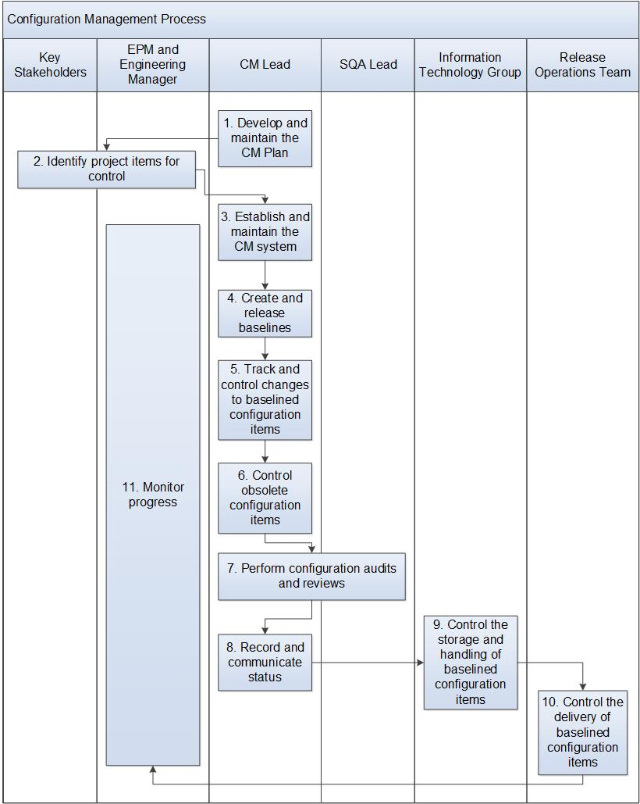

Configuration Management Process¶
This process describes the steps in managing defect reports from submission through resolution. Defects are managed in the Defect Management System (e.g., Jira).
The EPM is responsible for ensuring that this process is followed. The Bug Board is responsible for reviewing the defect record and deciding on the bug disposition.
Entry Criteria |
|
Inputs |
|
Exit Criteria |
|
Outputs |
|
Activities¶

Step # |
Activity Name |
Description |
|---|---|---|
1 |
Develop and maintain plan for software configuration management |
The CM Lead develops the program’s SCM plan. The plan is updated to reflect any major changes. Key elements in the plan are:
|
2 |
Identify project items for control |
The CM Lead, in conjunction with the Key Stakeholders (e.g., Engineering Manager, EPM, Technical Lead, and Test Lead) identify the CIs that have been documented in the SCM plan and assign unique identifiers to each item by following the document policy. These CIs compose the baselines at given points in the lifecycle. |
3 |
Establish and maintain the CM system |
The CM Lead establishes the CM system(s) needed to manage multiple levels of control, per the SCM plan. The systems include the storage media, procedures and tools for accessing the system(s). |
4 |
Create and release baselines |
The CM Lead, supported by the Development and Test Managers and teams, establish and maintain baselines at designated points in the lifecycle, per the SCM plan. A baseline is a set of CIs that has been reviewed and agreed on, which thereafter serves as the basis for further development and which can be changed only by following the change control process and program change request procedure. Baselines can be internal or external and typically include functional (e.g., requirements), development (e.g., builds) and release (e.g., product deliveries) baselines. The CI descriptions that compose the baselines are kept up-to-date, including their decomposition into lower level components, who is responsible for each item and when it is placed under control. The history of each CI is recorded in sufficient detail to recover a previously baselined version, if needed. After their approval, the baselines are communicated to the project staff using various mechanisms (e.g., Team email). |
5 |
Track and control changes to baselined configuration items |
The CM Lead and Development and Test Managers and teams initiate and record defects to address changes to baselined requirements and development work products (e.g., design). Meeting with the Key Stakeholders is held to request, evaluate, approve, disapprove and implement changes to baselined CIs according to the Change Management Procedure. The changes encompass both error correction and enhancement. The degree of formality necessary for the change process, as well as the change mechanism used depends on the project baseline affected and the impact of the change within the configuration structure, as outlined in the change management process. |
6 |
Control obsolete configuration items |
When a CI becomes obsolete, the obsolete CIs are handled as per the SCM plan in place. |
7 |
Perform configuration audits and reviews |
The CM Lead and SQA Lead conduct functional and physical configuration audits and reviews on a regular basis to ensure the following:
Audits are performed per the Audit Process. |
8 |
Record and communicate status |
The CM Lead reports the configuration status to affected stakeholders on a need basis. Example reports include the current status of CIs (e.g., under work, checked in, tested, released), changes to CIs since the last baseline and various build views. |
9 |
Control the storage and handling of baselined configuration items |
Backup (including disaster recovery), storage and handling of baselined CIs are performed by the Wind River Information Technology (IT) group. |
10 |
Control the delivery of baselined configuration items |
The Release Operations team is responsible for the delivery of baselined CIs. |
11 |
Monitor progress |
The Engineering Program Manager and Engineering Manager monitor CM progress and activities on a regular basis. |
References¶
??
Change Log¶
Date |
Change Request ID |
Version |
Change By |
Description |
05/01/2020 |
N/A |
0.1 |
Naomi Lee |
Initial Draft |
07/20/2020 |
N/A |
0.2 |
Shree Vidya Jayraman |
Updated the flow diagram and added link to step 5 |